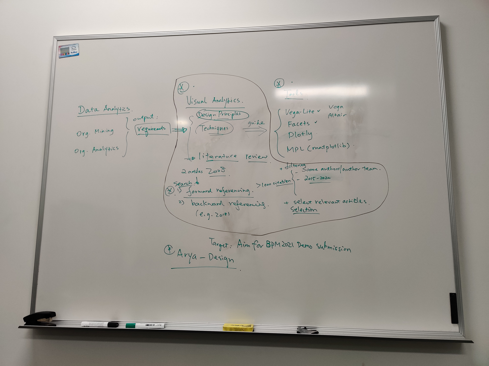

[1] Get familiar and fix Errors
[2] Interactive User Interface
[3] Improve visualisation of Organisational View
This picture will be replaced by a diagram later.
d3.js to find a better way to visualise tree model.Related link: Interactive Tree Diagram (D3v3) / Aaron Kyle Dennis / Observable (observablehq.com)
Check this paper for more info:
Song, M., & Van der Aalst, W. M. (2008). Towards comprehensive support for organizational mining. Decision Support Systems, 46(1), 300-317. https://doi.org/10.1016/j.dss.2008.07.002
| Data Analytic | => | Visual Analytic | => | Tools |
|---|---|---|---|---|
| Organisational Mining | requirements | Design Principle | guide | Vega |
| Organisational Analytics | Techniques | Vega-Lite | ||
| Matplotlib | ||||
| Seaborn | ||||
| Altair | ||||
| Plotly | ||||
| Facets |
Data Analytic should be the main part of research in Orgnasational Mining. It would provide requirements for Visual Analytic.
For my VRES and Honours study, this part will be processed by Roy.
Visual Analytic will combine current design principle and techniques with requirements from Data Analytic as new specifications to guide the design and develop visualisation tools.
Design Principle - fundamental pieces of advice
The start points of Visual Analytic for Organisational Analytic are:
Keim, D., Andrienko, G., Fekete, J. D., Görg, C., Kohlhammer, J., & Melançon, G. (2008). Visual analytics: Definition, process, and challenges. In Information visualization (pp. 154-175). Springer, Berlin, Heidelberg. https://doi.org/10.1007/978-3-540-70956-5_7
Keim D.A., Mansmann F., Schneidewind J., Thomas J., Ziegler H. (2008) Visual Analytics: Scope and Challenges. In: Simoff S.J., Böhlen M.H., Mazeika A. (eds) Visual Data Mining. Lecture Notes in Computer Science, vol 4404. Springer, Berlin, Heidelberg. https://doi.org/10.1007/978-3-540-71080-6_6
The explaination of Forward Referencing can be found in this link.
Detail steps:
Use specifications from Visual Analytic to judge which type of visualisation tool is fittest for Organisational Analytic.
Tools we know:
From High Level to Low Level
BPM 2021 Demo (finish before June 2021)
